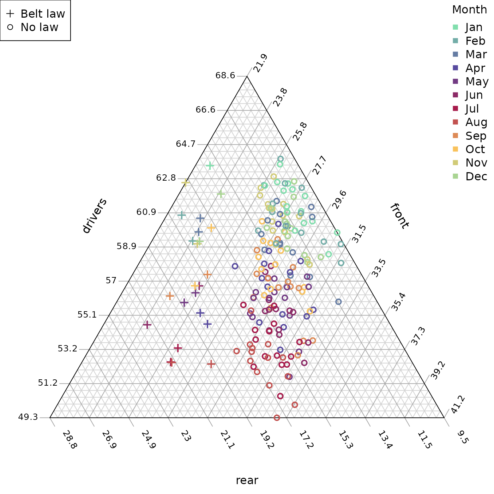
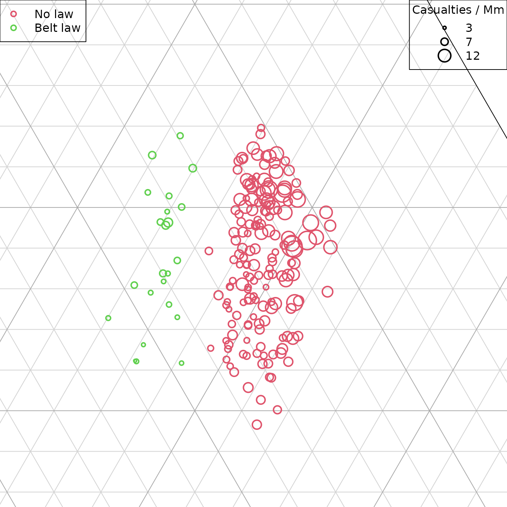

Introduction for new R users
Martin R. Smith
2026-02-02
Source:vignettes/new-users.Rmd
new-users.RmdBefore you start, have you read the introduction to the Ternary package?
This guide gives a brief example of using the “Ternary” package, using road casualty data from Great Britain.
First, we’ll load and preview the data:
## DriversKilled drivers front rear kms PetrolPrice VanKilled law
## Jan 1969 107 1687 867 269 9059 0.1029718 12 0
## Feb 1969 97 1508 825 265 7685 0.1023630 6 0
## Mar 1969 102 1507 806 319 9963 0.1020625 12 0
## Apr 1969 87 1385 814 407 10955 0.1008733 8 0
## May 1969 119 1632 991 454 11823 0.1010197 10 0
## Jun 1969 106 1511 945 427 12391 0.1005812 13 0For our example study, we’ll explore the relative safety of car
passengers through time by plotting the proportion of people killed or
seriously injured in accidents who were drivers (column
drivers), front-seat passengers (column
front), or rear-seat passengers (column
drivers).
Let’s start by loading the “Ternary” package and plotting the data:
# Load the Ternary library
library("Ternary")
# Define our columns of interest:
seat <- c("drivers", "front", "rear")
# Extract and plot the data
TernaryPlot(alab = seat[1], blab = seat[2], clab = seat[3])
TernaryPoints(Seatbelts[, seat])
The law column takes the value 1 for months
in which the wearing of a seatbelt was made compulsory in UK law. Let’s
explore the impact of this law by plotting data before and after the law
with different symbols. R’s plotting
characters are numbered thus:
par(mar = c(0, 0, 0, 0))
plot(0:20, rep(2, 21), pch = 0:20,
cex = 2, ylim = c(-1, 3), ann = FALSE)
text(0:20, rep(0, 21), 0:20)Let’s choose to plot a + (character 3) when
seatbelts are legally required, and o (character
1) when they are not.
beltLawPch <- ifelse(Seatbelts[, "law"], 3, 1)Let’s also make the plot more readable by shrinking the margins, and just plotting the region of the plot where the data lie:
# Shrink the margin so the plot's easier to read
par(mar = c(0, 0, 0, 0))
# Set up a blank plot,
TernaryPlot(
alab = seat[1], blab = seat[2], clab = seat[3],
region = Seatbelts[, seat]
)
# Add a legend
legend("topleft", c("Belt law", "No law"), pch = c(3, 1))
# Use our beltLawPch variable to style points
TernaryPoints(Seatbelts[, seat], pch = beltLawPch)
This seems to show a clear pattern: the seatbelt law led to a higher proportion of deaths and serious injuries occurring in the rear of cars.
Let’s look for other trends through time by colouring each data point by when it was collected. Each row summarizes data for a consecutive month, so we can simply colour the points by row number.
Let’s define a spectrum. The “viridis” colour scale is free from perceptual artefacts, is colour-blind friendly, and works when printed in greyscale.
nPoints <- nrow(Seatbelts)
rowCol <- hcl.colors(nPoints, palette = "viridis", alpha = 0.8)Now we can plot our data:
par(mar = c(0, 0, 0, 0))
TernaryPlot(
alab = seat[1], blab = seat[2], clab = seat[3],
region = Seatbelts[, seat]
)
legend("topleft", c("Belt law", "No law"), pch = c(3, 1))
# Add a legend for our colour scale
PlotTools::SpectrumLegend(palette = rowCol, legend = c("Dec 1984", "Jan 1969"))
# Use our rowCol variable to style points
TernaryPoints(Seatbelts[, seat], pch = beltLawPch,
lwd = 2, # Use wider lines so points are clearer
col = rowCol)
Our belt law appears to sit in the context of a longer term improvement in the relative safety of front-seat passengers. But how do we explain the scatter in the ‘drivers’ dimension? Let’s try plotting seasonal variation:
# Define a suitable cyclical spectrum
fourSeasons <- hcl.colors(4, "Spectral")
monthCol <- colorRampPalette(fourSeasons[c(1:4, 1)])(13)[c(7:12, 1:6)]
par(mar = c(0, 0, 0, 0))
TernaryPlot(
alab = seat[1], blab = seat[2], clab = seat[3],
region = Seatbelts[, seat]
)
legend("topleft", c("Belt law", "No law"), pch = c(3, 1))
legendMonths <- seq(1, 12, by = 2)
# Add a legend for our colour index
legend(
"topright",
bty = "n", # No frame
pch = 15, # Filled square
col = monthCol,
legend = month.abb,
title = "Month"
)
# Style points by law and month
TernaryPoints(Seatbelts[, seat], pch = beltLawPch,
lwd = 2, # Use wider lines so points are clearer
col = monthCol)
With or without seatbelts, drivers are in more relative danger in winter!
Now let’s size each point by the number of casualties, scaled by distance driven. We can use a different approach to zoom into the relevant region.
par(mar = c(0, 0, 0, 0))
TernaryPlot(alab = seat[1], blab = seat[2], clab = seat[3],
# Magnify the "action":
xlim = c(0.055, 0.095), ylim = c(0.48, 0.52))
legend("topleft", c("No law", "Belt law"),
col = 2:3, pch = 1, lwd = 2, lty = NA)
sizes <- c(3, 7, 12)
scale <- 200
legend("topright", title = "Casualties / Mm", legend = sizes,
pt.cex = sizes / 1000 * scale,
pch = 1, lwd = 2, lty = NA)
# Style points according to casualties and the law
TernaryPoints(Seatbelts[, seat], pch = 1, lwd = 2,
cex = Seatbelts[, "DriversKilled"] / Seatbelts[, "kms"] * scale,
col = 2 + Seatbelts[, "law"])
The smaller size of points after mandatory seatbelt usage is evident.
Now let’s plot the annual trend as a line, taking the values for each October as representative:
# Subset our data to extract only Octobers:
oct <- month.name == "October"
octBelts <- Seatbelts[oct, ]
par(mar = c(0, 0, 0, 0))
TernaryPlot(alab = seat[1], blab = seat[2], clab = seat[3],
xlim = c(0.055, 0.095), ylim = c(0.48, 0.52),
padding = 0.04)
TernarySegments(octBelts[-nrow(octBelts), seat], octBelts[-1, seat],
col = rowCol, lwd = 2)
# Label each point by its year
TernaryText(octBelts[, seat], paste0("'", 69:84),
font = 2, cex = 1.5,
# Semi-transparent colours
col = adjustcolor(rowCol[oct], alpha.f = 0.8))
# Provide a legend for our colour scheme
PlotTools::SpectrumLegend(
"topright",
bty = "n",
palette = rowCol,
legend = seq(1984, 1969, length.out = 4),
title = "Year"
)
Your own data
The next step is to try plotting your own data. There are many online tutorials for loading data in a variety of formats into R. Two of the most common cases are:
- Reading data from an Excel file. Here you can use:
# On first use only, install the 'readxl' package
install.packages("readxl")
# Load data into an object called `myData`
myData <- readxl::read_excel("path_to/your_excel_file.xlsx")
# View the loaded data
View(myData)
# View manual page for `read_excel` function, with details for advanced use
?read_excel- Reading data from a delimited file, such as a
.csv:
# Read data into an object called `myData`
myData <- read.csv("path_to/your_data_file.csv")
# View the loaded data
View(myData)
# For more flexibility - for instance for tab-separated data - see:
?read.table
# Read data from a tab-separated file with a header row
myData <- read.table("path_to/your_data_file.txt", sep = "\t", header = TRUE)
View(myData)